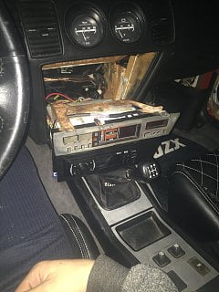

-
Pulled the dash on my â87 to run new speaker wires. Like everything else on this car, the rubber boot that runs from the door through the chassis is a very tight fit for my average sized American hands. Anyone whoâs done this before have any advice on running these new wires? Currently Iâm using a coat hanger taped to the wires lubed with dish soap
also, thereâs a heater vacuum line with a red stripe that runs from the egr through the firewall Iâve been attempting to replace for ages but havenât been able to spot or even feel it from the interior side of the car even with the dash removed. Is there anything I can do to make this more accessible? -
I released the boot from the sheetmetal on both sides and fished it through.
The vac line comes through the firewall to the left of the passenger footwell, up and behind the heater core/vent assembly box.
You might have to pull back the top edge of the carpet in that area to see it.

84 AE/Shiro #683/Shiro #820/84 Turbo -
Originally posted by Z_Karma View Post
any procedures on releasing the boot or should it just pop off?
-
At both ends, the boot is just pushed into the metal and retained like a grommet. Use a blunt flat edge object between the metal and the boot and work that around the perimeter while prying gently back until it releases.
Re-installation is easier if you use some silicone grease around the lip of the boot. On the door side, you can reach in and pull it back into place (it has a tab) while pushing from the outside but i don't remember if you can pull it from within on the body side.
84 AE/Shiro #683/Shiro #820/84 Turbo -
Originally posted by Z_Karma View Post
Boot comes out like a charm. After about an hour and some bloody hands, I was finally able to fish a coat hanger through the boot. I admire this community because everyone makes these jobs sound so easy but I promise owning this car is being in an abusive love-hate relationship, and thatâs what makes this car what it is. Anyway, I really have no idea how I am going to fit the wire through the boot along with the coat hanger because there just seems to not be any clearance and Iâm dreading thinking about it haha -
To be a Z31 enthusiast, you have to be equal parts ingenious cheapskate and automotive sadist.
I was able to fish some relatively large 8mm dia, 4 16awg conductor PVC jacketed speaker wire through mine when i upgraded my speakers to some 2-way 6.5" speakers.
The crossovers are tucked up around the side ducts beneath the dash. I used some pro audio stuff left over from a media center install my buddy did, similar to this stuff
84 AE/Shiro #683/Shiro #820/84 Turbo -
Finished routing 3/4 of the speakers now on to the final one which happens to be the passenger side door speaker, which so far looks like Iâm only going to be successful based on luck lol. What a job those other ones were man. Also wondering, where can I fit some 8 gauge power wire through the firewall to power my amplifier? Canât seem to find any crevices and may end up just drilling a hole. In addition to this, can I use the same 8 gauge wire that comes in the amp wiring kit as a ground wire? The ground cable that comes with it is only 3 feet, and Iâm not sure what to ground it on. Iâm running the new amplifier under the passenger seat next to the stock one. Should the stock one be unplugged when I run this new one?Originally posted by Z_Karma View PostLast edited by sagekh; 02-02-2019, 08:21 PM. -
About the sadist part, i ran mine through the wiring loom boot that is used for the factory harness that passes thru behind/beneath the battery as i wasn't keen on drilling though the firewall.
There is a passthru grommet for the hvac vacuum line that you could probably use, on the engine side it's near where the heater core lines pass thru. It can be a pain to get to on the other side tho.
I'm not a professional but know enough to be a bit "detail oriented" when it comes to wiring. I used to make process equipment chassis wiring harnesses as part of my job.
I ran two 8awg wires, one power and one ground, but also grounded to the chassis at the mounting point. The 12v+ is fused at the battery and a fuse block at the amps. I have 2 amps and a sound processor in the hatch compartment behind the seats tied into the fuse block..
Yeah, I would remove the factory amp and use it's sheet-metal screw mounting points as a point for a ground ring terminal.
84 AE/Shiro #683/Shiro #820/84 Turbo -
Is it safe to use the metal support bar that runs across under the dash as a ground? Thereâs bolts on there that almost seem to be specific grounding points
Iâm also not totally sure what to use as a ground wire for my head unit. The aftermarket head unit comes with a small harness plug with the 12v power ground antenna etc. wires to be soldered to the stock harness in the Z. However, the stock harness doesnât have a ground wire. I have some 16 gauge car wire stuff Iâm using for the amp remote cable I picked up at Walmart but itâs thicker than the black ground wire on the aftermarket head unit harness not sure if this would be a problem or not but would like to make sure before I attempt to ground itLast edited by sagekh; 02-08-2019, 09:48 PM. -
Any solid point on the chassis should be good. If it has paint on it, scrape it to bare metal for the best contact.
You can also use a internal/external tooth washer for a more secure and electrically conductive mount and thicker wire won't be a problem for ground.
Also, as far as the stock harness goes, don't attempt to patch the factory dimmable lighting circuit into your head unit for controlling any sort of dimmer function. It can cause shorting in both as i think the car uses a variable ground signal for dimming and most aftermarket head units I've encountered need a variable +12v signal. I mostly remember that they are rarely compatible.
84 AE/Shiro #683/Shiro #820/84 Turbo -
So now that Iâve got everything wired up and ready to go, it now seems as if my car has a poltergeist. None of the text or letters show up on the climate control panel nor the head unit when the ignition is on or the car is turned on. I donât believe at all that the head unit is defective, as for a couple very brief moments the clock DID show up on the head unit then went away. My connections are soldered pretty solid. I used a metra adapter as to avoid dimming issues with the stock electrical system and soldered those wires up to my head unitâs harness. I should also note that thereâs no dimming or lighting wire included with the aftermarket head unit harness (but two on the metra harness) the power wire is what lights it up. Does this mean I shouldnât use the metra harness after all? Overall Iâd rather not have to cut my stock wiring.
link to the adapter:
https://www.amazon.com/dp/B0002BEX0A…p_mob_ap_share


Copyright © 2006–. All rights reserved. Privacy Policy